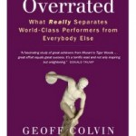

It’s been a while since the last edition of Khatzumoto’s Book List. Maybe it’ll be a monthly list again, maybe seasonal, maybe just “whenever”. Funnily enough, I’d kind of felt guilty about recommending books to people; I felt like I’d become a “book pusher” of sorts. But, you know what, screw that; it’s not like people are being forced to by them. Plus, kids keep sending me email after email asking me to recommend them books, and I know I enjoy getting opinions on books before buying them, and my friends are tired of hearing me talking about the books I like, so…why not post about it.
Rather than recommend books in one large post, I’d like to try just focussing on one book at a time. There’s enough say about each book that this approach makes sense.
怨み屋本舗

- Title: 怨み屋本舗 / URAMIYA HONPO
- Format: Manga (Serialized), Paperback
- Author: 栗原 正尚/ KURIHARA Showshow
- Furigana: Unfortunately, none whatsoever.
- Genre: Somewhat beyond classification; in Japanese the work around which the story centers is called 復讐代行業 — “Revenge By Proxy“, if you will.
- Veracity: Fiction
- Color: Black and white
- Illustrations: it’s a manga, champ
- Notes: Multi-volume series, 20 volumes total (AFAIK, the series is over now).
- YesAsia: Manga | TV Drama
This is one of the least well-known and most underrated manga of all time, especially considering that it runs a solid twenty volumes. It’s somewhat like the Ben Stiller of manga — it’s good and it’s been good for a long time, it even gets distributed through mainstream channels, but somehow it’s never at the top of public consciousness.
 The artist’s drawings are amateurish in the bad sense of the word — LOOK AT THOSE LEGS!! WHAT THE LONG HAPPENED TO THOSE LEGS!? AND WHY DOES SHE HAVE MAN HANDS?! In a way, it’s kind of inspiring that one could suck so hard at drawing and still be a real mangaka/漫画家. However, his stories are da bomb: Kuri can write. I am, quite literally, addicted to this series. It’s weird because structurally, every story is quite simple: revenge is taken at the request of a client. So, you kind of know the general destination. However, the journey there is one heck of a ride. Spinning twist after twist after turn after twist, Kurihara never does what you expect him to; every story leaves you thinking “NO…WAY!”. The violence, the coldness and the plausibility of the stories are just…as Dave Chappelle might phrase it: “too real for you, Billy”.
The artist’s drawings are amateurish in the bad sense of the word — LOOK AT THOSE LEGS!! WHAT THE LONG HAPPENED TO THOSE LEGS!? AND WHY DOES SHE HAVE MAN HANDS?! In a way, it’s kind of inspiring that one could suck so hard at drawing and still be a real mangaka/漫画家. However, his stories are da bomb: Kuri can write. I am, quite literally, addicted to this series. It’s weird because structurally, every story is quite simple: revenge is taken at the request of a client. So, you kind of know the general destination. However, the journey there is one heck of a ride. Spinning twist after twist after turn after twist, Kurihara never does what you expect him to; every story leaves you thinking “NO…WAY!”. The violence, the coldness and the plausibility of the stories are just…as Dave Chappelle might phrase it: “too real for you, Billy”.
This may sound a bit weird but I actually find this series quite…educational. There’s plenty of casual discussion of civil and criminal law, and even the structure of the police force. The book doesn’t set out to educate, it’s just that you’ll pick up a thing or two as you read on. Also, the violence is actually indirectly critical of violence; no one ever comes out and says it explicity, but the ultimate implication is that hate only breeds more hate and that we should all just be nice to each other. You may need quite a high level of Japanese to fully enjoy it all, but, like I’ve said before, focus more on your interests than your “level”.
Another strong point is the fact that while there is an overarching plot, each individual story more or less stands alone; where American TV and comics have traditionally tended to have a shortage of sequentiality, Japanese comics (I think) have slightly too much of it; once in a while, it’s nice to have a manga that you can jump into from anywhere.
 Finally, there is also an equally engrossing live-action TV drama adaptation composed of twelve 30-minute episodes plus two movie-length specials (AFAIK, the specials are not included in the main DVD box set: the first special is available here, the second won’t be out on DVD until Marchish but can be reserved). The TV show follows the manga quite faithfully — but of course with some necessary omission, as well as some very skilfull compression and mixing of separate stories from the manga into the feature-length specials.
Finally, there is also an equally engrossing live-action TV drama adaptation composed of twelve 30-minute episodes plus two movie-length specials (AFAIK, the specials are not included in the main DVD box set: the first special is available here, the second won’t be out on DVD until Marchish but can be reserved). The TV show follows the manga quite faithfully — but of course with some necessary omission, as well as some very skilfull compression and mixing of separate stories from the manga into the feature-length specials.
One more thing — there is a spinoff/sequel manga series now in serialization: 怨み屋本舗 巣来間風介/ URAMIYA HONPO SUKURAMA FUUSUKE. I haven’t read it yet…
Related Posts
 Book Review / 1-Minute Email-Fu | Quick, Concise, Chronically Awesome Japanese Business Email Examples For People Who Think Too Much
Book Review / 1-Minute Email-Fu | Quick, Concise, Chronically Awesome Japanese Business Email Examples For People Who Think Too Much Book Review: Brain Rules / 12 Principles for Pwning with Your Brain
Book Review: Brain Rules / 12 Principles for Pwning with Your Brain Book Review: The Way of Brain Success
Book Review: The Way of Brain Success Book Review: Keigo Grand Master — Develop Your Ownage In Polite Japanese Using Example Sentences
Book Review: Keigo Grand Master — Develop Your Ownage In Polite Japanese Using Example Sentences- Book Review / The Talent Code | Greatness Isn’t Born. It’s Grown. Here’s How.
- Book Review: Talent Is Overrated | A Great Book About Becoming Great
One of the first manga I read was GTO, so I was kind of spoiled from the beginning in terms of illustration quality. The story I am reading now was clearly a case of “I have a story, but I can’t draw very well,” but you can tell that the artist was getting better as he drew it (it’s called ドラゴン桜 – has a drama). For the ultimate in non-sequentiality, try クレヨンしんちゃん, each story is about 3 pages long! Or watch episodes of the cartoon on youtube, where each one is 7-8 minutes long (they are HILARIOUS).
Freaky llama legs.
Hey Khatz, as soon as you had mentioned this series on your Twitter Tweets updates, I got the series and have been watching it. Of course, I don’t understand much of it, but there’s still much to gain from context, and overall, it’s VERY interesting. I find myself watching a whole disc when I only wanted to watch one episode. Really good stuff! I’m on disc 4 right now, and hopefully I’ll start mining from it when I watch the series the second time around.
I was thinking of ordering the manga, but you pointed out that it doesn’t have furigana. That wouldn’t really be problem, but likely would take more time to look them up. To tell you the truth, I think I might get them anyways because when I’ve mined and read manga in the past, those little furigana seem to get caught up in my view unintentionally. Thanks for the recommendation!
And daaaaaaaaaaang mommy long-legs with man hands! LOL
is it just me or there’s no more search form on this blog since the twitter feed was added?
What a weird looking manga. But thanks for the recommendation, I took a look at it and it looks good. It’s on my queue for reading.
I also wrote up a bunch of recommendations for anime, manga, and movies here, if anybody’s interested:
alyks-rant.blogspot.com/2009/01/manga-movie-anime-recommendations.html
Haha, you think that drawing’s bad? Some mangakas like, really really really suck at drawing. Their proportions make me twitch physically. In Tokyo Crazy Paradise, there are many many scenes where like… the head is like…. 1/10 the size of the body. No joke. But I am capable of reading terrible manga, unless the art is absolutely horrifying.
I would comment on the actual point of this post but I don’t really have much to add. I will be sure to check out that manga….. later. (good manga makes me want to read the translation so I know what’s going on, so I’m sticking with repetitive shoujo that I still somehow find entertaining)
I will be sure to check out that manga….. later. (good manga makes me want to read the translation so I know what’s going on, so I’m sticking with repetitive shoujo that I still somehow find entertaining)
Hey!
Wonder what you guys think about this:
www.nihongo-yomu.jp
Pretty nice, short, full of furigana books.
Hey, if anyone’s interested, a site exists wherein one is able to grab the (RAW) form of mangas. That is, it’s in japanese. Here’s the site:
www.mangahelpers.com
Obviously i’m giving you a site where the downloads are free, but please support the artists when you can asap when its available to you!